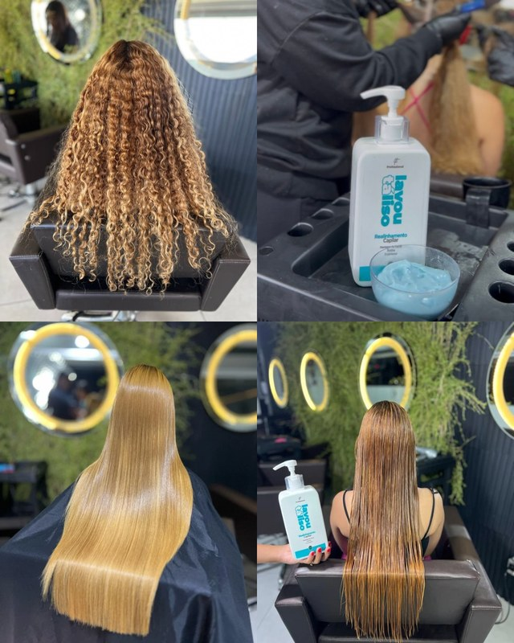
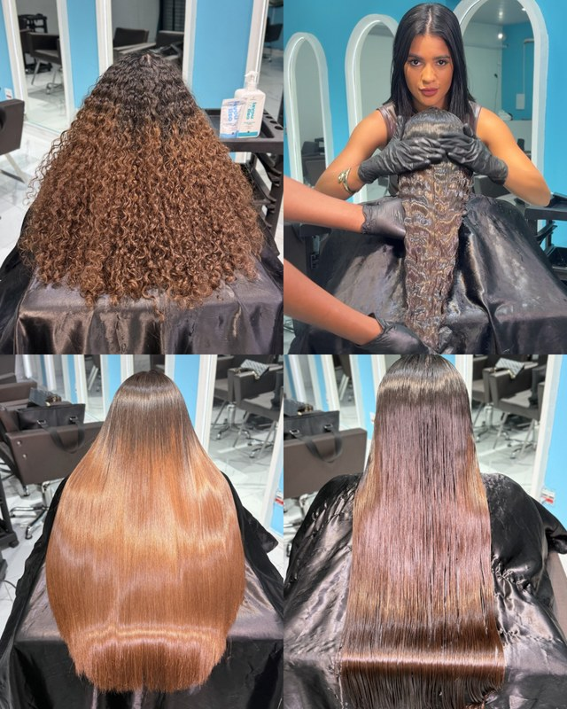

Como funciona
Três coisas, e ela faz sozinha.
Você não instala nada. É o mesmo WhatsApp de sempre.
1
A cliente não sente que está falando com um robô.
Ela usa o nome, pega a palavra que a cliente usou, e manda a foto de um cabelo parecido com o dela.
M
Marinaonline
hoje
oi, boa noite! queria saber sobre a progressiva
19:36
oii, boa noite! me conta, como é o seu cabelo hoje? cacheado, ondulado, liso com frizz?
19:36
é bem cacheado, e incha todo com o calor. eu vivo de coque
19:37
ahh entendi, Marina.. cacheado que incha com o calor é o que mais chega aqui
19:38


te mandei aí dois cabelos bem parecidos com o seu, de quem também vivia de coque. a gente fez essa transformação aqui.. me conta o que achou?
19:39
uau! é exatamente isso que preciso
19:40
2
Ela cobra o sinal, lê o comprovante e conclui.
A cliente paga e manda o PDF. A Lalá lê o comprovante, confere o valor e conclui o agendamento. Ninguém do salão digitou nada.
M
Marinaonline
hoje
oi! queria fazer minha manutenção, minha raiz já tá aparecendo
19:41
ótimo, Marina! você tá dentro do prazo, então paga valor de manutenção 🤩
19:42
vagou um horário na quinta às 10h, quer aproveitar?
19:42
quero sim
19:44
agora, pra finalizar seu agendamento.. pedimos um sinal de R$80,00 que é abatido no dia do procedimento. Chave PIX: 31 99386-5063 (Izabela Gonçalves)
19:45
ao finalizar, me envia o comprovante
19:45
Comprovante Pix.pdf1 página · PDF
19:51
recebido, Marina! agendamento concluído
📅 quinta, 17 de setembro
🕗 10h
19:51
3
Ela mesma escreve na agenda, com o sinal já conferido.
A agenda estava vazia. A Lalá abre a linha das 10h e digita: o nome da cliente, o serviço, e o sinal que já entrou. Nenhuma pessoa do salão tocou nisso.
6vagas livres
0agendadas
R$ 0em sinal
quinta, 17 de setembroagenda do dia
08:30
livre
10:00
livre
sinal pago · R$ 80
11:30
livre
13:00
livre
14:30
livre
16:00
livre
cliente marcada na agenda